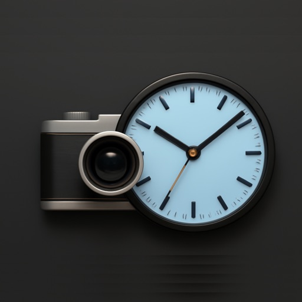
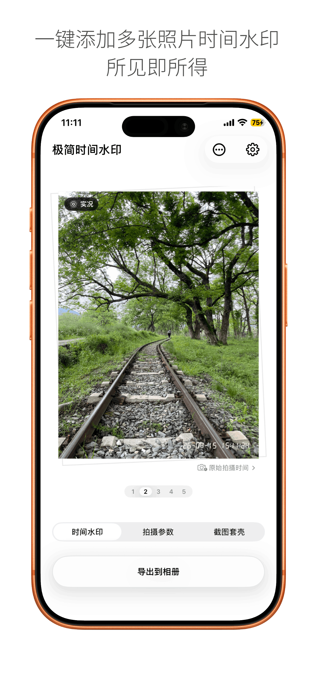
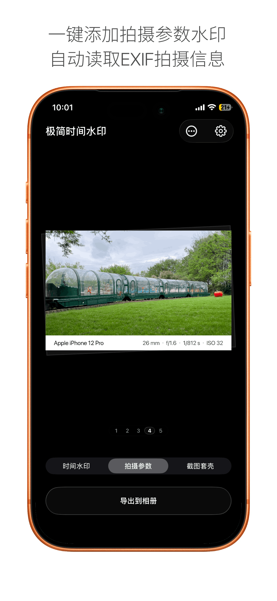
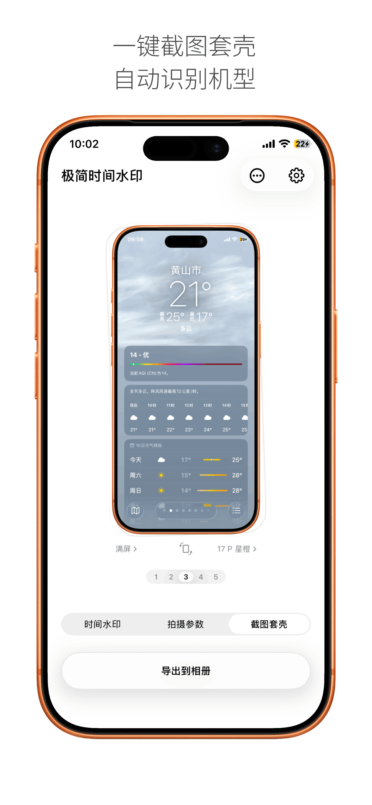

照片时间水印
读取照片真实拍摄时间，添加复古时间戳，适合旅行、家庭记录和日常影像整理。

iPhone 与 iPad
极简离线的照片时间水印工具。为照片一键添加真实拍摄时间、EXIF 参数水印和截图手机边框，支持实况照片与所见即所得编辑。



读取照片真实拍摄时间，添加复古时间戳，适合旅行、家庭记录和日常影像整理。
把机型、镜头、焦段、快门等拍摄参数转化为干净的照片签名。
为截图添加设备边框，也支持实况照片、批量处理、小组件和照片扩展。
Ready to clean 9.1 GB
Xcode 缓存、模拟器日志、DerivedData、DeviceSupport、Archives 等常见目录集中展示。
先查看类别和项目列表，再只清理真正需要移除的数据。
常驻菜单栏，快速找回空间，保持开发机器轻盈有序。
产品原则
这些项目来自真实的使用场景：记录照片里的时间，整理开发环境里的缓存，或让某个高频流程少一点摩擦。新的产品会继续加入这个集合。